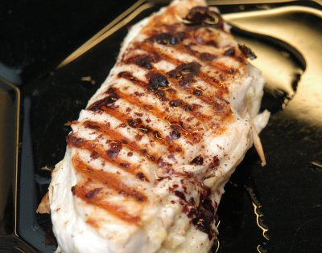

| Zutaten für 4 Personen: | |
| 4 | Frische Pouletbrüstchen |
| ½ | Lauchstengel |
| Rahm | |
| 1 dl | Rotwein |
| 2 dl | Bouillon |
| 20 g | Butter |
4 frische Pouletbrüstchen, aufschneiden und weich klopfen. ½ Lauchstengel, fein schneiden, würzen andünsten und mit Rahm weichkochen.
Füllung auf Pouletbrüstchen verteilen, einrollen und mit Zahnstocher fixieren.
Würzen, mit Öl bepinseln und auf dem Grill anbraten. Nach dem Anbraten Hitze reduzieren, etwa 12 Minuten beidseitig braun grillieren. Mit Rotweinjus servieren.
(1dl schwerer Rotwein auf 1/3 reduzieren, 2dl Bouillon dazugeben, etwas einkochen, abschmecken, mit 20g Butter in Stückchen verfeinern).
Züri Woche Sommer 1996 Grill Tipps.
Hat am 29.3.2008 ausgezeichnet geschmeckt. Ich habe den Rotweinjus kaputt gemacht indem ich mit der Butter das zu lange kochen liess und es sich getrennt hat. Geschmeckt hat die Sauce noch gut aber so toll sah das nicht mehr aus. Die Butter also erst ganz am Schluss zugeben. RE
@LINKBACK_TAG@ @WAKELOCK@